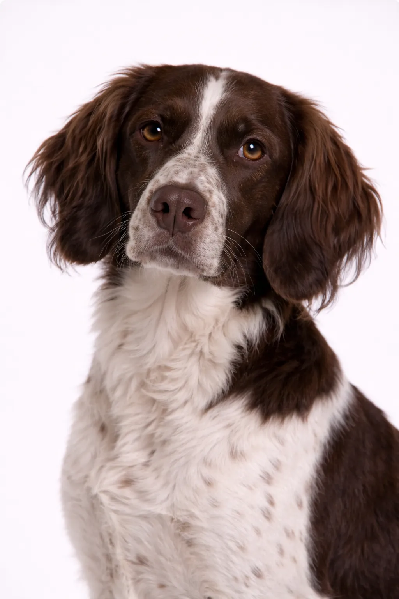

Münsterländer Pequeño
Un enérgico raza mediana que prospera con dueños activos que aman el aire libre.
20-22 in
40-59 lbs
Puntuaciones de la Raza
Temperamento
Descripción
Despite name, el Münsterländer Pequeño es un medium-sized versatile perro de caza. They're highly entrenable and make excellent family compañeros.
Temperamento
Münsterländer Pequeño is known for being inteligente, entrenable, versatile. They're excellent with niños and make wonderful family pets. Their intelligence and eagerness to please make entrenamiento enjoyable. Early socialization helps them develop into well-rounded compañeros.
Salud
Generalmente saludable with a lifespan of 12-14 años. Common concerns include problemas articulares. Regular veterinary checkups and preventive care are important. Maintaining a healthy weight helps prevent many health issues.
Ejercicio
Alta energía raza requiring vigorous ejercicio diario—at least an hora of activity. They thrive with activo familias who enjoy outdoor activities. estimulación mental through entrenamiento and puzzle toys is equally important. Without adequate exercise, they may develop behavioral issues.
⦿ ¿Es Esta Raza Adecuada para Ti?
✓ Ideal Para
- Cazadores
- Familias activas
- Entusiastas de deportes caninos
✗ No Ideal Para
- Dueños sedentarios
- Residentes de apartamentos
Nuestro Veredicto: Despite name, el Münsterländer Pequeño es un medium-sized versatile perro de caza. They're highly entrenable and make excellent family compañeros.